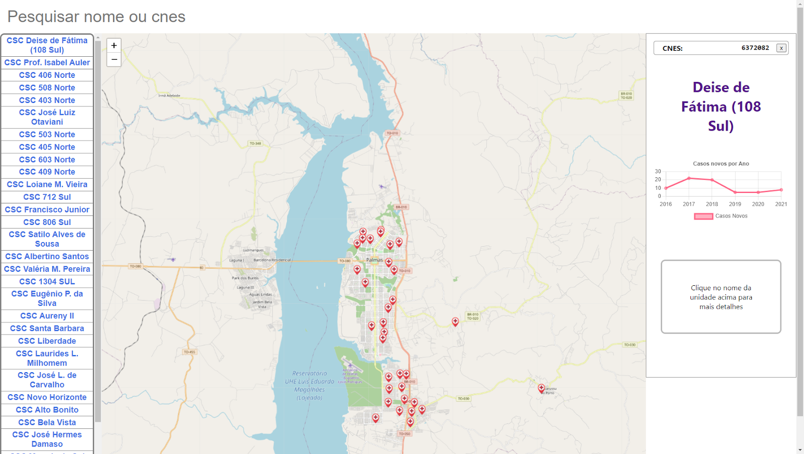
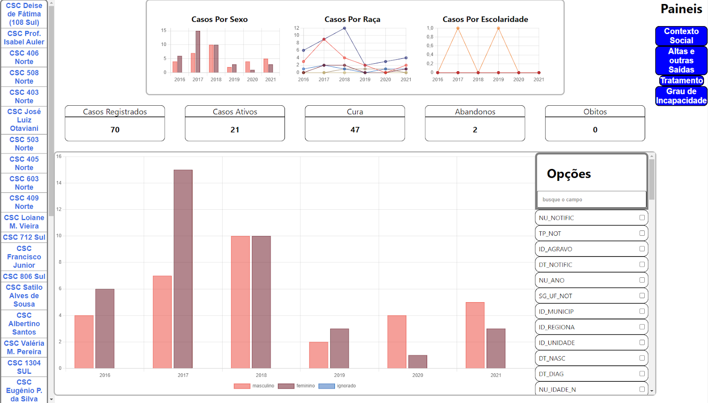

Formação
-
Projeto de Pesquisa - PIBIC Universidade Federal do Tocantins
Descoberta de Conhecimento na Base de Dados do Sistema de Informação de Agravos de Notificação no Contexto da Hanseníase no Tocantins
01 de Setembro de 2021 31 de Agosto de 2022-

Georreferenciamento dos Centros de Saúde da Familia em Palmas. -

Painel com gráficos associando casos por sexo, raça e escolaridade, acompanhamento dos casos, novos casos e busca de colunas da tabela original.
Neste projeto tive a responsabilidade inicialmente foi de preprocessar a base de dados, levantada e estruturada por colegas anteriores, com casos da doença a partir da base de dados da Secretaria Municipal da Saúde (SEMUS) de Palmas, buscando trazer uma nova luz sobre o quadro hiper-epidêmico de hanseníase no Tocantins.
Utilizando da metodologia de Descoberta de Conhecimento em Banco de Dados (KDD) que envolvia desde o pré-processamento, mineração de dados, pós-processamento até por fim com a interpretação e avaliação das informações adquiridas foi possível se construir uma aplicação web.
A aplicação tinha como funcionalidade servir de painel de controle para o quadro da hanseníase em Palmas para a secretária de saúde, trazendo o mapeamento dos casos relativo as unidades e os padrões reconhecidos por gênero, escolaridade entre outros.
Tecnologias Usadas
- Pandas
- JavaScript
- NPM
- Node
- Json
- Leafy
-